pacman::p_load(tidyverse, readxl, janitor, here)Making the Hockey Sticks of Prosperity and Doom 🏒
Climate
Globalisation
The other day I made some charts for The Polycrisis newsletter. They were for a piece on the globalisation debate, written by Anthea Roberts and Nicolas Lamp. In this post, I offer some general reflections, and run through the steps to make one of the trickier charts that appeared in it.
Hockey sticks and crosses
For some background, here is the opening of Roberts’ and Lamp’s piece entitled “Hockey Sticks and Crosses - Images that define the globalization debate”:
“They say a picture is worth a thousand words. Two types of images are key to understanding current debates about economic globalization: the hockey stick chart, representing the stunning and inexorable growth of some phenomenon; and the cross chart, whose lines represent changes in relative power and prosperity.
There are good and bad hockey sticks, and the job of policy makers the world over is to harness the former while curbing the latter. But the domestic and international politics of addressing these hockey sticks is complicated by their intersection with distributive conflicts—which can be seen in the form of crosses.”
Drawing on previous work, and using the images of hockey sticks and crosses, Roberts and Lamp identify a series of narratives that “dominate Western debate about the virtues and vices of economic globalization”.
There is the hockey stick of global prosperity, that the establishment wheels out to defend their pursuit of endless growth and the continued march of globalisation.
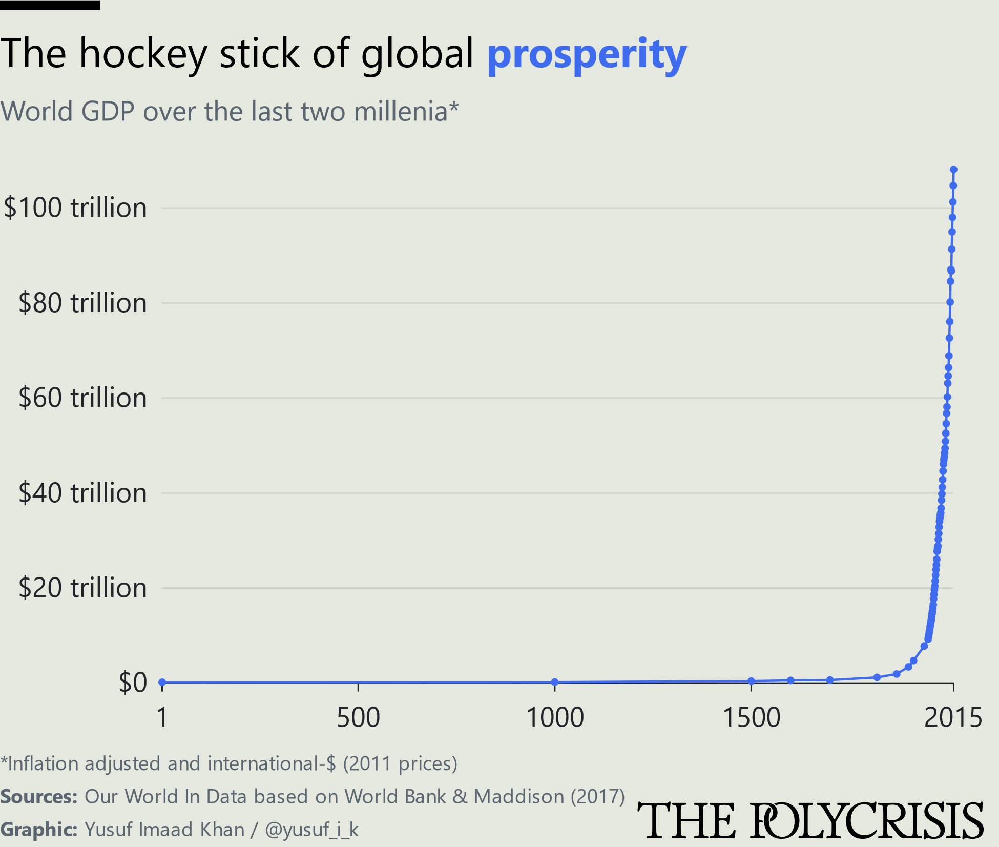
This is mirrored in the hockey stick of doom, where globalisation and the pursuit of growth are driving up cumulative carbon emissions and fueling the climate crisis.
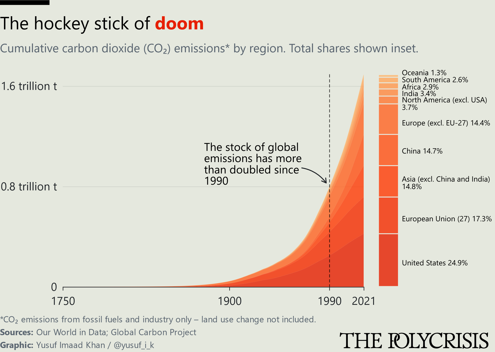
All the while, the polarity of the international system is shifting and this can be seen in the cross of global power, where US hegemony is increasingly challenged by China.
I’d recommend reading the whole piece because these huge ideas are clearly set out, and the framing is interesting to think with. The charts are a bit mediocre, but they get the job done.
Crucially, Roberts and Lamp resist reduction or overly simplistic framings of these issues:
“No single narrative or image can capture the multifaceted nature of complex issues like economic globalization and the climate crisis. Understanding different perspectives and how they interact is crucial.”
I have a lot of time for this kind of approach - which could be understood as perspectival humility. It seems a reasonable precept for thinking about the polycrisis, and it’s upfront about the limits of our individual perspectives or frameworks. It did make me think about places where perspectival humility is lacking. I have in mind debates with some opponents of degrowth who seem to dismiss, deride, or entirely misread the relevant literature.1
As I understand it, the point is that all of these hockey sticks and crosses, the seemingly inexorable growth and distributional conflicts, are happening everywhere all at once, with varying degrees of consequence. People are acting in the world in accordance with the narratives they find salient, and to have any hope of moving forward, we must understand this. The task may be to recognise the immense fallout of global shifts and attempt a project of reconciling our viewpoints to the modern world, and to each other. As the Instagram influencer Rumi2 puts it:
The truth was a mirror in the hands of God. It fell to earth and broke into pieces. Everyone took a piece, saw their own reflection, and thought they had the truth.
Slightly grandiose but it captures the point nicely. Enough preambling. The main point of this Rogue Analysis post is to run through the steps to make a chart that appeared in the piece. 24 hockey sticks representing prosperity and doom.
The Great Acceleration
The chart in question depicts what has come to be known as the “Great Acceleration” - a surge of human activity in the mid-twentieth century. In an incredible effort to “build a more systematic picture of the human-driven changes to the Earth System”, the International Geosphere-Biosphere Programme (IGBP) collected data on 24 indicators. 12 to record the trajectory of the human enterprise, and 12 for features of the Earth System.
It is worth reflecting on this striking paragraph on their findings. It appears in the 2004 IGBP report synthesising research from their first phase:
One feature stands out as remarkable. The second half of the twentieth century is unique in the entire history of human existence on Earth. Many human activities reached take-off points sometime in the twentieth century and have accelerated sharply towards the end of the century. The last 50 years have without doubt seen the most rapid transformation of the human relationship with the natural world in the history of humankind.
As I understand it, the Great Acceleration has also formed part of the basis for defining the proposed geological epoch, the Anthropocene. The more I think about it and try to understand what the IGBP team did, the more remarkable it becomes.
This year, Professor Will Steffen, the climate scientist who led the IGBP, who led this research, and who did so much more, passed away.
Thank you to Tim/@70sBachchan for sharing and discussing various versions of this chart, and pointing me to the sources behind it.
Where possible, the IGBP collected data starting from 1750 (or earlier) to capture the beginning of the industrial revolution. The 2004 version of the paper takes the time series up to the year 2000. The 2015 version of the paper takes it up to 2010. Some of the indicators differ between versions. The choices of indicator, the collection of the data, and the dataset construction are described in the respective versions. However long this blog post runs, just remember that this is a drop in the ocean compared to what the IGBP team did.
Here is an earlier version of the chart from 2004:
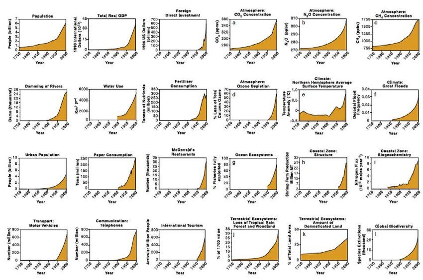
I don’t think its exaggeration to say that this is one of the most important visualisations in human history. It is incredible how we can know this. How long we have known this for. And how many far-reaching ramifications the Great Acceleration has had, and that we are yet to fully comprehend.
Here is the version from the 2015 paper with a data update, some indicators which changed, and a line to highlight 1950, where most of the indicators start to surge:
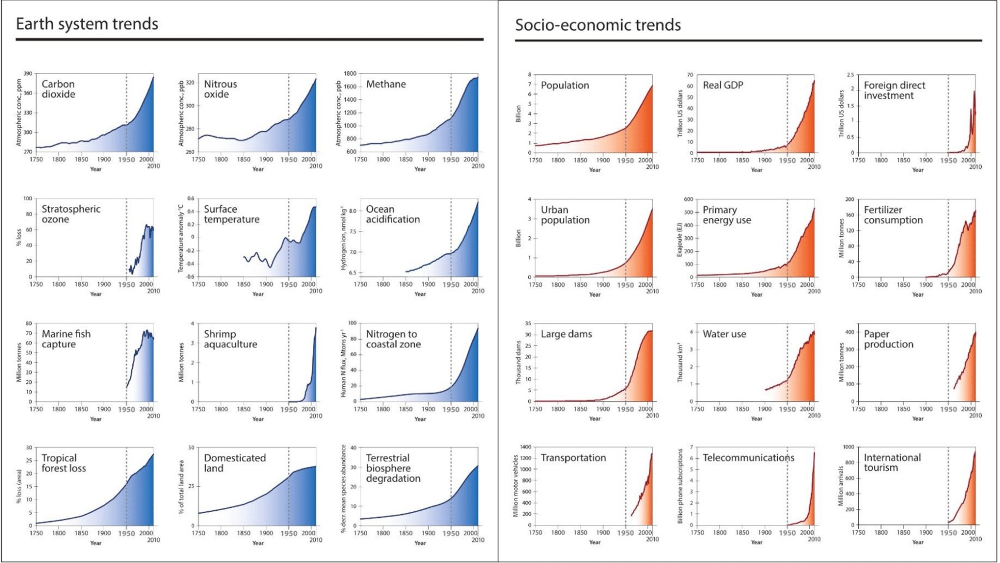
It can be a bit overwhelming to be confronted with all this information, and a natural question is “how is this being measured?”. To be clear about my limitations, I do not fully understand all the indicators listed here, or all of the methods and efforts to collect this data. I am deferring to scientific expertise, the combined efforts of those who worked on this project, and I am simply trying to reproduce a chart. That said, I found a version of the 2015 Steffen et al. paper with all the units, captions, and sources in a list. So I’ve put them all under the button below in case its helpful to see:
The 24 indicators - units/captions/sources
Trends from 1750 to 2010 in indicators for the structure and functioning of the Earth System.
1. Carbon dioxide. Unit: parts per million. Caption: Carbon dioxide from firn and ice core records (Law Dome, Antarctica) and Cape Grim, Australia (deseasonalised flask and instrumental records); spline fit. Source: D. Etheridge CSIRO, Australia; Etheridge et al. 1996; MacFarling Meure et al. 2004 and 2006; Langenfelds et al., 2011.
2. Nitrous oxide. Unit: parts per billion. Caption: Nitrous oxide from firn and ice core records (Law Dome, Antarctica) and Cape Grim, Australia (deseasonalised flask and instrumental records); spline fit. Source: D. Etheridge CSIRO, Australia; MacFarling Meure et al. 2004 and 2006; Langenfelds et al., 2011.
3. Methane. Unit: parts per billion. Caption: Methane from firn and ice core records (Law Dome, Antarctica) and Cape Grim, Australia (deseasonalised flask and instrumental records); spline fit. Source: D. Etheridge CSIRO, Australia; Etheridge et al. 1998; MacFarling Meure et al. 2004 and 2006; Langenfelds et al., 2011.
4. Stratospheric ozone. Unit: Percentage. Caption: Maximum percentage total column ozone decline (2-year moving average) over Halley, Antarctica during October, using 305 DU, the average October total column ozone for the first decade of measurements, as a baseline. Source: Data provided by J. D. Shanklin, British Antarctic Survey, UK. www.antarctica.ac.uk/met/jds/ozone/index.html#data
5. Surface temperature. Unit: Degrees Celsius. Caption: Global surface temperature anomaly (HadCRUT4: combined land and ocean observations, relative to 1961-1990, 20 y Gaussian smoothed). Source: P. Jones, Climatic Research Unit, UK in conjunction with the Hadley Centre (UK). http://www.cru.uea.ac.uk/cru/info/warming/gtc.csv
6. Ocean acidification. Unit: nmol kg-1. Caption: Ocean acidification expressed as global mean surface ocean hydrogen ion concentration from a suite of models (CMIP5) based on observations of atmospheric CO2 until 2005 and thereafter RCP8.5. Source: James Orr, LSCE/IPSL, France; Bopp et al. 2013 and IPCC Fifth assessment report, Working Group 1, Chapter 6 (Ciais et al. 2013).
7. Marine fish capture. Unit: Million tonnes. Caption: Global marine fishes capture production (the sum of coastal, demersal and pelagic marine fish species only), i.e., it does not include mammals, molluscs, crustaceans, plants etc. There are no FAO data available prior to 1950. Source: Data is from the FAO Fisheries and Aquaculture Department online database (FAO-FIGIS 2013).
8. Shrimp aquaculture. Unit: Million tonnes. Caption: Global aquaculture shrimp production (the sum of 25 cultured shrimp species) as a proxy for coastal zone modification. Source: Data is from the FAO Fisheries and Aquaculture Department online database FishstatJ (FAO 2013).
9. Nitrogen to coastal zone. Unit: Mtons yr-1. Caption: Model-calculated human-induced perturbation flux of nitrogen into the coastal margin (riverine flux, sewage and atmospheric deposition). Source: Mackenzie et al., 2002.
10. Tropical forest loss. Unit: Percentage. Caption: Loss of tropical forests (tropical evergreen forest and tropical deciduous forest, which also includes the area under woody parts of savannas and woodlands) compared with 1700. Source: Julia Pongratz, Carnegie Institution of Washington, Stanford, US; Pongratz et al. 2008. AD 1700 to 1992 is based on reconstructions of land use and land cover (Pongratz et al. 2008). Beyond 1992 is based on the IMAGE land use model.
11. Domesticated land. Unit: Percentage. Caption: Increase in agricultural land area, including cropland and pasture as a percentage of total land area. Source: Julia Pongratz, Carnegie Institution of Washington, Stanford, US; Pongratz et al. 2008. AD 1700 to 1992 is based on reconstructions of land use and land cover (Pongratz et al., 2008). Beyond 1992 is based on the IMAGE land use model.
12. Terrestrial biosphere degradation. Unit: Percentage. Caption: Percentage loss of terrestrial mean species abundance relative to abundance in undisturbed ecosystems as an approximation for degradation of the terrestrial biosphere. Source: R. Alkemade, PBL Netherlands Environmental Assessment Agency: modeled mean species abundance using GLOBIO3 based on HYDE reconstructed historical land use change estimates (until 1990) then IMAGE model estimates (Alkemade et al. 2009, www.globio.info, ten Brink et al., 2010).
Trends from 1750 to 2010 in globally aggregated indicators for socio-economic development.
1. Population. Unit: billion. Caption: Global population data according to the HYDE (History Database of the Global Environment) database. Data before 1950 are modeled. Data are plotted as decadal points. Sources: HYDE database 2013; Klein Goldewijk et al. 2010.
2. Real GDP. Unit: trillion US real 2010 dollars. Caption: Global real GDP (Gross Domestic Product) in year 2010 US dollars. Data are a combination of Maddison for the years 1750 to 2003 and Shane for 1969-2010. Overlapping years from Shane data are used to adjust Maddison data to 2010 US dollars. Sources: Maddison 1995; M. Shane, Research Service, United States Department of Agriculture (USDA); Shane 2014.
3. Foreign direct investment. Unit: trillion US dollars. Caption: Global Foreign direct investment in current (accessed 2013) US dollars based on two data sets: IMF (International Monetary Fund) from 1948-1969 and UNCTAD (United Nations Conference on Trade and Development) from 1970-2010. Sources: IMF 2013; UNCTAD 2013.
4. Urban population. Unit: billion. Caption: Global urban population data according to the HYDE database. Data before 1950 are modeled. Data are plotted as decadal points. Sources: HYDE database 2013; Klein Goldewijk et al. 2010.
5. Primary energy use. Unit: Exajoule (EJ). Caption: World primary energy use. 1850 to present based on Grubler et al. 2012 1750-1849 data are based on global population using 1850 data as a reference point. Sources: A. Grubler, International Institute for Applied Systems Analysis (IIASA); Grubler et al. 2012.
6. Fertilizer consumption. Unit: million tonnes. Caption: Global fertilizer (nitrogen, phosphate and potassium) consumption based on International Fertilizer Industry Association (IFA) data. Sources: Olivier Rousseau, IFA; IFA database.
7. Large dams. Unit: thousand dams. Caption: Global total number of existing large dams (minimum 15 m height above. foundation) based on the ICOLD (International Committee on Large Dams) database. Source: ICOLD database register search. Purchased 2011.
8. Water use. Unit: thousand km 3. Caption: Global water use is sum of irrigation, domestic, manufacturing and electricity water withdrawals from 1900 to 2010 and livestock water consumption from 1961-2010. The data are estimated using the WaterGAP model. Source: M. Flörke, Center for Environmental Systems Research, University of Kassel; Flörke et al. 2013; aus der Beek et al. 2010; Alcamo et al. 2003.
9. Paper production. Unit: million tonnes. Caption: Global paper production from 1961 to 2010. Sources: Based on FAO on-line statistical database FAOSTAT.
10. Transportation. Unit: million motor vehicles. Caption: Global number of new motor vehicles per year. From 1963-1999 data include passenger cars, buses and coaches, goods vehicles, tractors, vans, lorries, motorcycles and mopeds. Data 2000-2009 include cars, buses, lorries, vans and motorcycles. Sources: IRF (International Road Federation) 2011.
11. Telecommunications. Unit: billion telephone subscriptions. Caption: Global sum of fixed landlines (1950-2010) and mobile phone subscriptions (1980-2010). Landline data are based on Canning for 1950-1989 and UN data from 1990-2010 while mobile phone subscription data are based solely on UN data. Sources: Canning 1998; United Nations Statistics Division (UNSD) 2014.
12. International tourism. Unit: million arrivals. Caption: Number of international arrivals per year for the period 1950-2010. Sources: Data for 1950-1994 are from UNWTO (United Nations World Tourism Organization) 2006 and data for 1995-2004 are from UNWTO 2011, data for 2005-2010 are from UNWTO 2014.
Let’s take a look at a few more versions of this chart. Here is a more stylised version
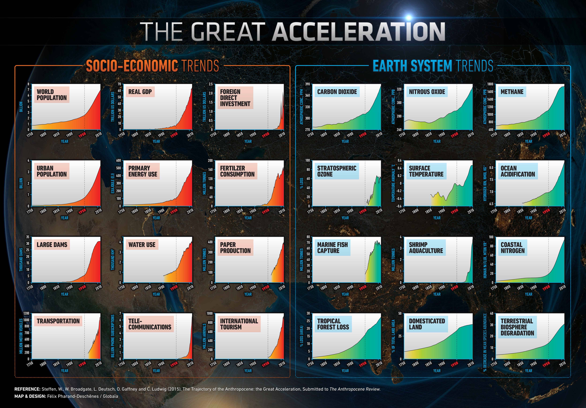
Here is a stacked area chart version. I think the values have been scaled and stacked? I’m not sure.
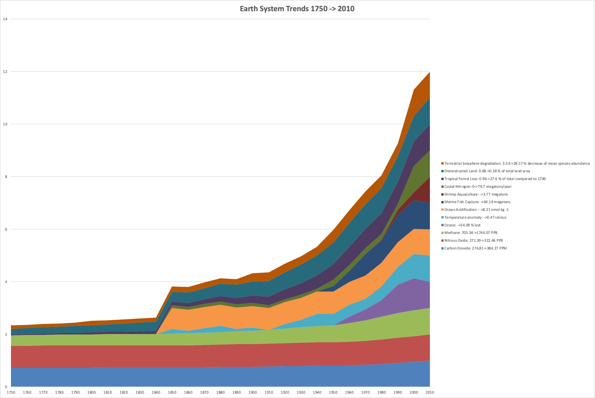
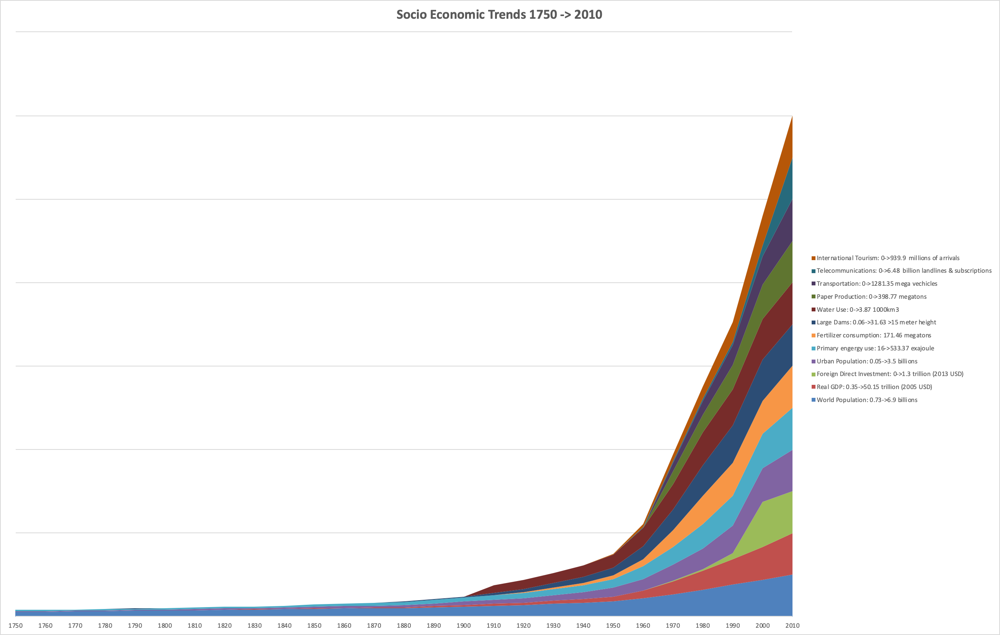
And finally, here is a version that I think appeared as a multi-page spread in New Scientist:
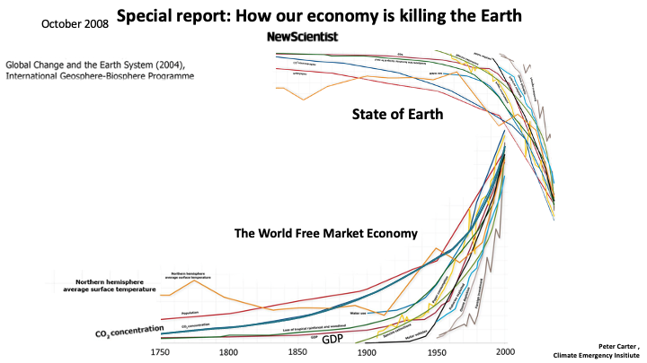
Dramatic. But the details of each indicator are lost. And the y-axis is ???? I really do applaud the vision though. It seems like a good idea to keep trying to expand our representational apparatus, and find new ways to explore and explain things.
These are a few examples of people visualising this. There are many more examples, and lots to learn from. So when I was about to make a version of this chart, I was thinking “given all these other great charts, what am I going to add here?”.
It seemed unlikely that I could improve on the small multiple shaded area charts. I tried to keep it simple with 3 clear goals. Clarity, minimalism, and fitting all the charts on a mobile screen. Because let’s face it. Most people see charts on their phone these days.
Here is my take on the Great Acceleration charts:
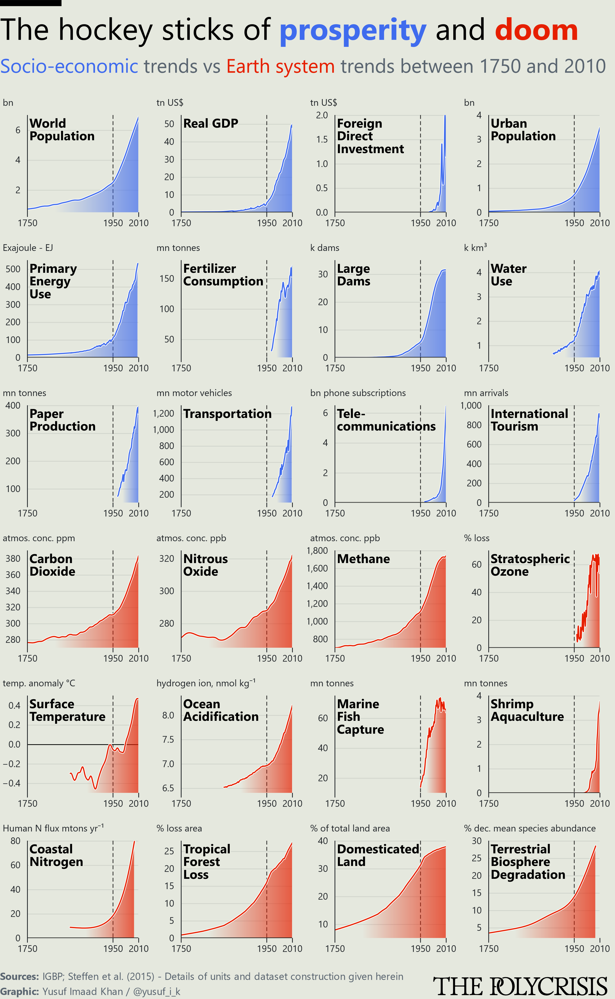
I think the mobile screen goal worked on the Phenomenal World website (the image above is a bit big). I hope its a bit clearer. And I’ve tried to keep it pretty minimal. I know of two errors on this version of the chart:
Errors
- My data cleaning cut off a small chunk of the fertilizer consumption time series at the start. The overall trend is still visible.
- I filtered a single value that was 0 in 1943 for surface temperature. Thankfully, the plotting tool interpolated and its virtually indistinguishable with or without that observation.
Do let me know if you spot others. My code is here. There is a great deal more to be improved on too:
Possible improvements
- The gradient is not mapped to the Y values. It simply starts at an arbitrary % value - 25% -this notebook might fix the issue
- In the original paper, the stratospheric ozone Y axis goes to 100% to show that ozone loss actually levelled off. This is kind of visible here, but really it should have been faithful to the original
- The clipping might be too sharp
- Where the Y axis doesn’t start at 0, I tried to make the hard line at the bottom conditional. I think the gradient could have faded upwards as well in order to deemphasise a hard breaking point
- The aspect ratio is fairly arbitrary and I tried to scale it so it would fit on the website. The 4x6 layout might be squashing things too much
- The coastal nitrogen data seems to be different compared to other charts. I think I know why - the time series goes back before 1750, there are large gaps, and it seems other versions of the visual interpolate using pre-1750 values. I could be wrong.
- Maybe the messaging of this chart is irresponsible. I’m not sure. We’re hurtling towards catastrophe and I’m nitpicking about the details of reproducing a chart that’s been about for a while. Its very absurd.
If you’d like to have a go at improving this chart, you can edit the code live over here.
Sourcing the data
Right. Let’s make this chart. Where is the data? Easy - the IGBP website. Okay so its sitting in an Excel spreadsheet. No worries. I’m sure this will all be cleaned up. There are probably like 1 or 2 sheets. Max 3. Quick job. No worr-
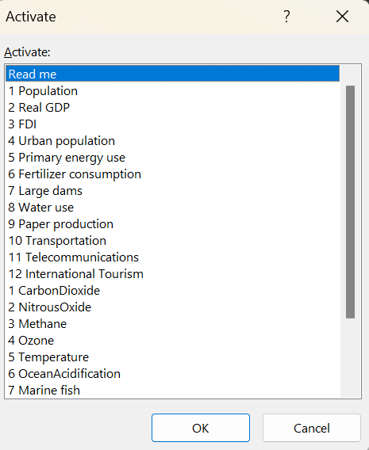
Ah.
So. Each of the 24 variables for the Great Acceleration chart are sitting in a different sheet. And…all the sheets are structured slightly different. That’s fine 🥲. Let’s press on. Our goal is to take each of the 24 sheets, stitch them together, and put them all in a tidy data format to work with.
Cleaning it up
First, load up some packages to help clean this all up.
(I flip between base R and tidyverse/purrr because I can’t always make things work in tidyverse/purrr. I will try to be more consistent in the future.)
Next, let’s write a function to get every single sheet from the spreadsheet.
# First write a function to get all data from the excel sheets
get_data_from_all_sheets <- function(file_path) {
sheets <- readxl::excel_sheets(file_path)
data <- list()
for (sheet_name in sheets) {
sheet_data <- readxl::read_excel(file_path, sheet = sheet_name)
data[[sheet_name]] <- sheet_data
}
return(data)
}
# Use the function
sheet_data <- get_data_from_all_sheets("igbp_great_acceleration_data_collection.xlsx")Let’s take a look at what this gives us:
summary(sheet_data) Length Class Mode
Read me 5 tbl_df list
1 Population 6 tbl_df list
2 Real GDP 6 tbl_df list
3 FDI 6 tbl_df list
4 Urban population 6 tbl_df list
5 Primary energy use 3 tbl_df list
6 Fertilizer consumption 6 tbl_df list
7 Large dams 6 tbl_df list
8 Water use 6 tbl_df list
9 Paper production 6 tbl_df list
10 Transportation 13 tbl_df list
11 Telecommunications 6 tbl_df list
12 International Tourism 3 tbl_df list
1 CarbonDioxide 2 tbl_df list
2 NitrousOxide 3 tbl_df list
3 Methane 2 tbl_df list
4 Ozone 2 tbl_df list
5 Temperature 2 tbl_df list
6 OceanAcidification 2 tbl_df list
7 Marine fish 2 tbl_df list
8 ShrimpAqu 2 tbl_df list
9 Nitrogen 2 tbl_df list
10 TropicalForest 2 tbl_df list
11 DomLand 2 tbl_df list
12 Terrestrial biosph degradati 2 tbl_df listGreat. We have all the sheets as a big list of tibbles (I promise that’s a real term). The 24 variables for the Great Acceleration and one for a “Read me”. Let’s take a closer look at what is in each tibble by clicking “sheet_data” in our environment:
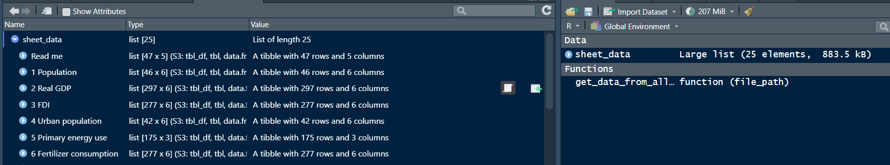
And if we click on that little icon next to `2 Real GDP`?
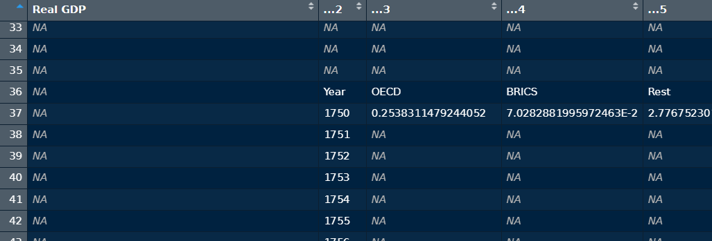
Right. So its not picking up the right row as the correct heading for each column (or variable). Let’s sort this and a few other problems out.
First, remove the read me tibble - we don’t need it for the chart. But we should read it!
# Remove read me (but obviously have a read of it)
sheet_data <- sheet_data[!names(sheet_data) %in% c("Read me")]Next, let’s fix which row each tibble is picking up as the first row:
# Fix the var name row - should have one column in it that contains "Year"
fixed_list <- lapply(sheet_data, function(tibble) {
year_row <- which(apply(tibble, 1, function(row) any(grepl("Year", row, ignore.case = FALSE))))
if (length(year_row) > 0) {
col_names <- as.character(tibble[year_row[1], ])
tibble <- tibble[-year_row, ]
names(tibble) <- col_names
}
return(tibble)
})And then, we can get rid of any completely empty variables (i.e. columns that its picking up that have no title and no data):
# Get rid of empty vars
fixed_list <- lapply(fixed_list, function(tibble) {
tibble <- tibble[, colSums(is.na(tibble)) < nrow(tibble)]
tibble <- tibble[, colnames(tibble) != "" & !is.na(colnames(tibble))]
return(tibble)
})We are getting somewhere! How are we going to link all these tibbles up? Right now we have 24 different tables sitting in a list (an object that contains an ordered bunch of objects). We need to squash this and create a giant table with all the 24 variables in it. How do we get there? We need a common variable to match all the variables together. Like a key or something. What is that variable? Well in this case its the year variable. All this data is about the world. But the thing linking each observation is the year its happening.
But here is a snag. In some of the sheets, year is called “Year AD”. So it won’t match all the other variables called “Year”. Let’s rename that to help with the matching:
# Rename any slightly different year columns so we can join it all up
fixed_list <- map(fixed_list, ~ {
.x %>%
rename_with(~ if_else(. %in% c("Year AD"), "Year", .), .cols = everything())
})We can also trim the dataset a bit for our purposes. For some variables, it includes breakdowns for classifications like OECD/BRICs etc. I only need the values for the whole world. For my purposes, I’m just going to get rid of the rest of the categories because I don’t need them:
# Remove redundant vars
fixed_list <- map(fixed_list, ~ select(.x, -one_of(c("OECD", "BRICS", "Rest", "OEDC", "OECD accumulative", "BRICS accumulative", "Rest accumulative")))) ## rest accumalative - 2 spacesNearly there. Let’s get rid of any completely empty spaces by getting rid of any NAs appearing in the year variable across all the tibbles. I made a mistake here last time, but thankfully it was small. See the errors callout above.
# Get rid of NAs in Year variable *only*
fixed_list <- map(fixed_list, ~ filter(.x, !is.na(Year)))Remember how I only left values for the world? Not BRICs or OECD? Well in each tibble, those values appear under a column called “World”. So you click population, it will say “Year” in one column then “World” in another. And if we join that altogether, it will be a bit tricky to distinguish which World values are for what indicator.
R will probably do some renaming to tackle the duplication, but it might not be understandable for us. So let’s just add the list element name of each indicator to every “World” variable. E.g “1 Population_World” or “4 Urban population_World”.
# Add list element name to each var except year so we can discern what each var is referring to
fixed_list <- imap(fixed_list, ~ {
var_names <- names(.x)
year_var <- var_names[var_names == "Year"]
other_vars <- var_names[var_names != "Year"]
other_vars_new <- paste0(.y, "_", other_vars)
names(.x) <- c(year_var, other_vars_new)
.x
})Now comes the bit that is at least somewhat satisfying:
- Take all of the tibbles that are in the list (I promise you these are meaningful terms)
- Reduce them into a giant tibble - by joining each one of them by the “Year” variable
- Clean up all the names (remove spaces/upper case etc.)
- And then flip the whole thing from being 25 variables (columns) by 331 observations (rows), to 3 variables (columns) to 7944 observations (rows). This is because I stuck each of the 24 great acceleration variables into a column called indicator. And I’m left with a long dataset with just 3 variables “year”, “indicator”, and “values”.
Here is what I mean by flipping:
Let’s go ahead and do that:
# Join everything in the nested list together, put it in long format, and then classify trend type for facet
igbp_combined_df <- reduce(fixed_list, full_join, by = "Year") %>%
clean_names() %>%
pivot_longer(2:25, names_to = "indicator", values_to = "values")Okay! That is the bulk of the cleaning done. We have gone into the spreadsheet, grabbed the 24 sheets we needed, and stitched them all together. I’m sure there’s an easier way to achieve this, and I apologise if I haven’t explained this in enough detail. I have linked relevant concepts in the explanation above, and hopefully the steps give you a sense of whats happening.
There are a few more steps to clean up the data, but I’ll spare you all the details in this write up. If you’re super curious, you can click the buttons below to see all the steps and code for the rest of the cleaning. But some of these are extremely minor points.
Click for steps
- Classify indicators as “earth-systems” or “socio-economic” trends
- Filter for years between 1750-2010 (some indicators included projections)
- Ensure all the values are numeric so you can plot them
- Filter NAs once in long format (I thought it was appropriate at this stage and wouldn’t change the chart)
- Arrange the data by year
- Sort out the factor levels (i.e. make all the socio-economic trends appear before earth systems trends in same order as spreadsheet/paper)
- Filter a potential outlier that is stretching the Y axis for ozone loss but otherwise isn’t visible on the chart?
- Convert the years as numeric for now (because I end up parsing them as years in javascript later on)
- Round year values (e.g. 1999.6 = 2000)
- Write proper labels and y axis labels for units
- Edit one variable because its giving % as decimal rather than % digits (i.e. 0.1 instead of 10%), and its simpler to fix this now
- Calculate minimum values for surface temperature so you can shade underneath the line when it goes below 0 (the plotting tool defaults to shading between 0 and values)
Code
igbp_combined_df <- igbp_combined_df %>%
mutate(trend_type = if_else(indicator%in%c(
"x1_population_world",
"x2_real_gdp_world",
"x3_fdi_world",
"x4_urban_population_world",
"x5_primary_energy_use_exajoule_ej",
"x6_fertilizer_consumption_world_incl_historic",
"x7_large_dams_world_accumulative",
"x8_water_use_world",
"x9_paper_production_world",
"x10_transportation_world",
"x11_telecommunications_world",
"x12_international_tourism_world"),
"Socio-economic Trends", "Earth System Trends")) %>%
# Filter for range (some variables include projections)
filter(!year>2010,
!year<1750) %>%
# convert to numeric
mutate(values = as.numeric(values)) %>%
# Filter empty observations
filter(!is.na(values)) %>%
# Order by year
arrange(year) %>%
# sort out the levels
arrange(factor(indicator, levels=c(
"x1_population_world",
"x2_real_gdp_world",
"x3_fdi_world" ,
"x4_urban_population_world" ,
"x5_primary_energy_use_exajoule_ej" ,
"x6_fertilizer_consumption_world_incl_historic" ,
"x7_large_dams_world_accumulative",
"x8_water_use_world",
"x9_paper_production_world",
"x10_transportation_world",
"x11_telecommunications_world",
"x12_international_tourism_world",
"x1_carbon_dioxide_carbon_dioxide_ppm",
"x2_nitrous_oxide_nitrous_oxide_ppb",
"x3_methane_methane_ppb",
"x4_ozone_ozone_percent_loss",
"x5_temperature_temperature_anomaly_deg_c",
"x6_ocean_acidification_mean_hydrogen_ion_concentraion_h_nmol_kg",
"x7_marine_fish_marine_fish_capture_million_tonnes",
"x8_shrimp_aqu_shrimp_aquaculture_million_tonnes",
"x9_nitrogen_nitrogen_flux_mtons_yr_1",
"x10_tropical_forest_tropical_forset_loss_percent",
"x11_dom_land_domesticated_land_percent",
"x12_terrestrial_biosph_degradati_percent_decr_mean_species_abundance"
))) %>%
filter(
#!values==0, # unsure why you did this in original version. Fix it and note error. Removes one observation in 1943. Thankfully Observable Plot interpolated and it does not affect the visual
## filter x4 ozone for 1962 - this year keeps extending the y axis very far because there is a single negative value for ozone loss. I need to be careful here. I HAVE MADE A JUDGMENT HERE TO OMIT THIS VALUE FROM THE DATASET - IT IS AN ANALYTICAL CHOICE BASED ON ME THINKING THAT THE READER SHOULD BE ABLE TO VIEW THE GENERAL TRENDS WITH THE MAXIMUM CLARITY POSSIBLE. LET THIS BE KNOWN.
!(year == "1962" & indicator == "x4_ozone_ozone_percent_loss" & values<0)) %>%
# Keep as numeric for now - convert in OJS
mutate(year = as.numeric(year),
# Some values for year presented as e.g. 2010.5 - round this for now
year = ceiling(year),
# Rename indicators to readable versions
labels = case_match(indicator,
"x1_population_world"~"World Population",
"x2_real_gdp_world"~"Real GDP",
"x3_fdi_world"~"Foreign Direct Investment",
"x4_urban_population_world"~"Urban Population",
"x5_primary_energy_use_exajoule_ej"~"Primary Energy Use",
"x6_fertilizer_consumption_world_incl_historic"~"Fertilizer Consumption",
"x7_large_dams_world_accumulative"~"Large Dams",
"x8_water_use_world"~"Water Use",
"x9_paper_production_world"~"Paper Production",
"x10_transportation_world"~"Transportation",
"x11_telecommunications_world"~"Tele- communications",
"x12_international_tourism_world"~"International Tourism",
"x1_carbon_dioxide_carbon_dioxide_ppm"~"Carbon Dioxide",
"x2_nitrous_oxide_nitrous_oxide_ppb"~"Nitrous Oxide",
"x3_methane_methane_ppb"~"Methane",
"x4_ozone_ozone_percent_loss"~"Stratospheric Ozone",
"x5_temperature_temperature_anomaly_deg_c"~"Surface Temperature",
"x6_ocean_acidification_mean_hydrogen_ion_concentraion_h_nmol_kg"~"Ocean Acidification",
"x7_marine_fish_marine_fish_capture_million_tonnes"~"Marine Fish Capture",
"x8_shrimp_aqu_shrimp_aquaculture_million_tonnes"~"Shrimp Aquaculture",
"x9_nitrogen_nitrogen_flux_mtons_yr_1"~"Coastal Nitrogen",
"x10_tropical_forest_tropical_forset_loss_percent"~"Tropical Forest Loss",
"x11_dom_land_domesticated_land_percent"~"Domesticated Land",
"x12_terrestrial_biosph_degradati_percent_decr_mean_species_abundance"~"Terrestrial Biosphere Degradation",
.default = indicator),
# write up the labels - FT style for millions/billions - https://aboutus.ft.com/press_release/ft-makes-change-to-style-guide
yAxisLabels = case_match(indicator,
"x1_population_world"~"bn",
"x2_real_gdp_world"~"tn US$",
"x3_fdi_world"~"tn US$",
"x4_urban_population_world"~"bn",
"x5_primary_energy_use_exajoule_ej"~"Exajoule - EJ",
"x6_fertilizer_consumption_world_incl_historic"~"mn tonnes",
"x7_large_dams_world_accumulative"~"k dams",
"x8_water_use_world"~"k km³",
"x9_paper_production_world"~"mn tonnes",
"x10_transportation_world"~"mn motor vehicles",
"x11_telecommunications_world"~"bn phone subscriptions",
"x12_international_tourism_world"~"mn arrivals",
"x1_carbon_dioxide_carbon_dioxide_ppm"~"atmos. conc. ppm",
"x2_nitrous_oxide_nitrous_oxide_ppb"~"atmos. conc. ppb",
"x3_methane_methane_ppb"~"atmos. conc. ppb",
"x4_ozone_ozone_percent_loss"~"% loss",
"x5_temperature_temperature_anomaly_deg_c"~"temp. anomaly °C",
"x6_ocean_acidification_mean_hydrogen_ion_concentraion_h_nmol_kg"~"hydrogen ion, nmol kg⁻¹",
"x7_marine_fish_marine_fish_capture_million_tonnes"~"mn tonnes",
"x8_shrimp_aqu_shrimp_aquaculture_million_tonnes"~"mn tonnes",
"x9_nitrogen_nitrogen_flux_mtons_yr_1"~"Human N flux mtons yr⁻¹",
"x10_tropical_forest_tropical_forset_loss_percent"~"% loss area",
"x11_dom_land_domesticated_land_percent"~"% of total land area",
"x12_terrestrial_biosph_degradati_percent_decr_mean_species_abundance"~"% dec. mean species abundance",
.default = indicator)) %>%
# Convert to readable % values i.e. 40 rather than 0.4. This is because the y axis label will tell you if its % or not. No need for extra code to adjust each axis value for each of 24 vars
mutate(values = if_else (indicator == "x11_dom_land_domesticated_land_percent", values*100, values)) %>%
# this is to consistently shade values under the line for surface temp facet +
# leave a little room underneath so the line isn't flush with bottom of multiple.
# Observable plot area mark defaults to shading within constraint of y = 0, but also offers y1 + y2 values
group_by(indicator) %>%
mutate(min = if_else (indicator == "x5_temperature_temperature_anomaly_deg_c", min(values) - 0.1, NA)) %>%
ungroup() %>%
# for the conditional bit of code that will fix differences between surface temp and other small multiples
mutate(values_temp = values,
values_all_else = if_else (indicator == "x5_temperature_temperature_anomaly_deg_c", NA, values)) Here is what my final cleaned up dataset looked like:
glimpse(igbp_combined_df)Rows: 2,950
Columns: 9
$ year <dbl> 1750, 1760, 1770, 1780, 1790, 1800, 1810, 1820, 1830, …
$ indicator <chr> "x1_population_world", "x1_population_world", "x1_popu…
$ values <dbl> 0.7388971, 0.7770402, 0.8198269, 0.8960748, 0.9404165,…
$ trend_type <chr> "Socio-economic Trends", "Socio-economic Trends", "Soc…
$ labels <chr> "World Population", "World Population", "World Populat…
$ yAxisLabels <chr> "bn", "bn", "bn", "bn", "bn", "bn", "bn", "bn", "bn", …
$ min <dbl> NA, NA, NA, NA, NA, NA, NA, NA, NA, NA, NA, NA, NA, NA…
$ values_temp <dbl> 0.7388971, 0.7770402, 0.8198269, 0.8960748, 0.9404165,…
$ values_all_else <dbl> 0.7388971, 0.7770402, 0.8198269, 0.8960748, 0.9404165,…Let’s export that as a CSV too:
write.csv(igbp_combined_df, "igbp_combined_df.csv", row.names=FALSE)Done!
The chart
Now. If you’ve stuck it out this far, you might be thinking “Yusuf. I really didn’t want to know all of that. I thought this was about making charts, and I was thinking you’d discuss fun things like colour choice and font. Can you just explain the chart a bit? And make it quick”. If you’re having this sort of reaction, I say…fair enough…but no promises. Let’s get to the chart.
Rough plots with ggplot2
Let’s take a look at the data just to check that our cleaning worked out. For speed, we can use ggplot2. 6 short lines of code gets us this:
igbp_combined_df %>%
ggplot(aes(year, values)) +
geom_line() +
facet_wrap(~labels, scales = "free_y", ncol = 4) +
scale_x_continuous(breaks = c(1750, 2010)) +
theme_minimal() 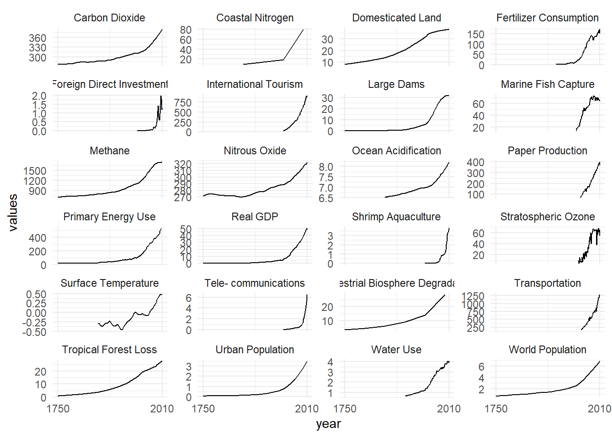
That is not bad at all. Its a rough but meaningful chart that took basically no time. It seems to resemble the Great Acceleration charts. I did a few more spot checks, and after spotting two issues (noted above), one remaining mistake or difference from other charts I’ve seen, is the nitrogen data. I think whats happening is that there are observations sitting outside the 1750-2010 range, and other visualisations have been created by interpolating between these dates for the nitrogen data. I could be wrong about the source of the discrepancy. Let me know what you reckon.
Anyway, Its insane that we have tools like ggplot2. While we’re here, let’s see if we can make a quick version of that New Scientist Great Acceleration chart:
igbp_combined_df %>%
# scale the values
group_by(indicator) %>%
mutate(scaled_values = scale(values),
# multiply Earth system trends by -1 to flip
scaled_values = if_else(trend_type == "Earth System Trends", scaled_values * -1, scaled_values)) %>%
ungroup() %>%
# Plot it
ggplot(aes(year, scaled_values, group = labels, colour = labels)) +
geom_line() +
scale_x_continuous(breaks = c(1750, 1950, 2010)) +
theme_minimal() +
theme(legend.position = "none",
axis.title.x = element_blank(),
axis.title.y = element_blank(),
axis.text.y = element_blank(),
panel.grid = element_blank())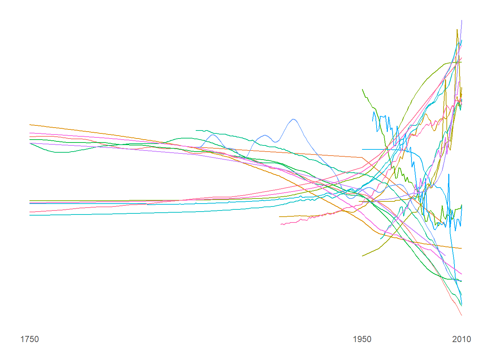
Hmmm. Its a bit off, but the rough ideas are there. I won’t take this one much further. Now that the data seems like its in the right shape, let’s try and make the actual chart.
What tool to use?
So what tool to use? We could continue with ggplot2. Its great. Its fast, intuitive, and I’m already working in R. So that seems like the natural choice. But It can be tough to refine the styling precisely. Not impossible though. I’ve seen people make extraordinary things with it.
But given that this is 24 small multiples and I want it to fit on a phone, I want a bit more control. It would also be good if the chart could be rendered at the highest possible quality, and then any exports would be scaled down versions of that.
What tool would give us this? Its tempting to go for the other end of the spectrum from the high level of abstraction of ggplot2. This would be D3. D3 is incredible low level, but you can basically make whatever you want. The trade-off is that the code would be very long…and I am not where I want to be with my D3 skills.
So we’ve reached an impasse. Ease and high level abstraction - ggplot2. Unparalleled flexibility and detail - D3. If only I could have both. Well…that’s what I take Observable Plot to be. Its built on D3 and by the creators of D3, but it uses the grammar of graphics that ggplot2 relies on for its wonderful capacity for abstraction. It is, as the great scholar H. Montana tells us, the best of both worlds. You can write less code to see more charts…but its extensible with D3 if you need it. Great for somebody like me who was sitting in between ggplot2 and D3 (and finding D3 tough).
Finally making the chart with Observable Plot
First let’s just move our dataset object in R to work with Observable Plot.
ojs_define(igbp_combined_df_convert = igbp_combined_df)Next, let’s import the latest version of Plot, change the data structure to work with it, and make sure it is reading all the dates correctly.
newPlot = import("https://esm.sh/@observablehq/plot@0.6.1");
// Transpose
data = transpose(igbp_combined_df_convert);
//Parse time
parseTime = d3.utcParse("%Y");
dataEdit = data // have to define this otherwise it throws an error
.forEach((d) => {
d.year = parseTime(d.year);
});Let’s try and make this chart. Its important to note that Observable Plot is still being worked on, and new features are being added all the time. So one thing it can’t do easily is make small multiple charts where all the Y axes have different scales/units (scales = “free_y” for the ggplot2 users). It can do other standard small multiple charts, and I think they’re pretty close to proper solution for free scales. But for now, we have to use a small workaround. This workaround draws on excellent solutions suggested by Toph Tucker and Mike Bostock for this.
Roughly how does this solution work? Well it takes the dataset, uses a bit of D3 to iterate through each group (the 24 Great Acceleration indicators), and makes a chart for each one using Observable Plot, and fits it into a space. I’ve left the space as flexible so the chart will move about depending on device. If you’re on your phone, the charts per row will scale down to 1x24. So its a bit of a scroll. But if you open it on a laptop, it might be 4x6.
Here it is:
//https://observablehq.com/@tophtucker/facet-wrap + https://observablehq.com/@observablehq/plot-facet-wrap
// Credit to Toph Tucker and Mike Bostock for these solutions. I mashed them together to make the Great Acceleration chart.
htl.html`<div id=facetChart style="display: flex; flex-wrap: wrap; line-height: 0px;">
${d3.groups(data, (d) => d.labels)
// iterate through the data
.map(([facet, data]) =>
htl.html`<figure>
${newPlot.plot({
width: 199,
height: 170,
marks: [
newPlot.line(data, {
x: "year",
y: "values",
z: "trend_type",
// change the colour for the type of trend its showing
stroke: (d) => (d.trend_type === "Socio-economic Trends" ? "#3f6bee" : "#e61f00")})
]
})}
</figure>`
)}
</div>`That is basically the backbone of this chart. I really don’t want to “rest of the owl” my explanation, but this post is dragging on a bit. So I’ll do two things. First, there is a live version of the chart code that you can explore here. Second, the remaining steps to fix up the labelling and aesthetics are under the button below…
Further edits
Fix up the spacing between charts and axes
Make the tick marks as minimal as possible (e.g. x axis - 1750, 1950, 2010)
Larger font
Only grid lines for Y
Remove the tick marks that stick out from each axis
Write a bit of code to filter through data and get correct label for each y axis
Put the legend in the title
Add shading under the line to better view trends and draw attention to acceleration. This will need to be conditional to ensure that variables increasing from non-0 are shaded from underneath and not just between 0 and line
Where the Y axis is being cut, deemphasise a hard floor by removing Y rule. For consistency, make floor visible for surface temperature as it is increasing, but from a previous temperature anomaly that was negative
Put the label of each indicator in the frame and make it bold so you can see what each multiple is referring to
Add a dashed line to mark 1950 - where most indicators surge
Place a slightly thicker white line behind the line so it appears clearer against the shading and background
And I’ve folded the code away next to the chart.
The hockey sticks of prosperity and doom
Socio-economic trends vs Earth system trends between 1750 and 2010
Code
htl.html`<div id=facetChart style="display: flex; flex-wrap: wrap; line-height: 0px;">
${d3.groups(data, (d) => d.labels)
.map(([facet, data]) =>
htl.html`<figure>
${newPlot.plot({
// Dimensions
width: 199,
height: 170,
marginBottom: 20,
marginLeft: 35,
marginTop: 24,
// Font size
style: {fontSize: "12px"},
// x axis features
x: {
label: null,
nice: false,
ticks: [new Date("1750-01-01"), new Date("1950-01-01"), new Date("2010-01-01")],
domain: [new Date("1750-01-01"), new Date("2010-01-01")]
},
// y axis features
y: {
nice: true,
ticks: 4,
grid: true,
tickSize: 0,
domain: d3.extent(data, (d) => d.values),
labelArrow: "none",
label: `${d3.groups(data, (d) => d.yAxisLabels).map(([yAxisLabels, data]) => yAxisLabels)}` //genuinely can't believe this worked
},
// remove legend
color: {legend: false},
// actual components of shaded area chart
marks: [
// Add gradient - Credit Mike Bostock again - https://observablehq.com/@observablehq/plot-area-chart-with-gradient
() => htl.svg`<defs>
<linearGradient id="gradientBlue" gradientTransform="rotate(0)">
<stop offset="25%" stop-color="white" stop-opacity="0" />
<stop offset="100%" stop-color="#3f6bee" stop-opacity="0.7" />
</linearGradient>
<linearGradient id="gradientRed" gradientTransform="rotate(0)">
<stop offset="25%" stop-color="white" stop-opacity="0" />
<stop offset="100%" stop-color="#e61f00" stop-opacity="0.7" />
</linearGradient>
</defs>`,
// add a y rule for surface temp 0 value
newPlot.ruleY(data, {
y: 0,
stroke: "black",
strokeWidth: (d) => (d.labels === "Surface Temperature" ? 0.5 : 0), // x position and clipping is different for surface temp data
clip: "frame"
}),
// add dashed line for 1950
newPlot.ruleX([new Date("1950-01-01")], {stroke: "black", strokeDasharray: "5,3", strokeOpacity: 0.8}),
// add area chart
newPlot.areaY(data, {
x: "year",
y: "values_all_else",
fill: (d) => (d.trend_type === "Socio-economic Trends" ? "url(#gradientBlue)" : "url(#gradientRed)"), //"#3f6bee" : "#e61f00"
clip: true,
curve: "natural"
}),
// add area chart for surface temp (different because goes below 0)
newPlot.areaY(data, {
x: "year",
y1: "min",
y2: "values_temp",
fill: (d) => (d.trend_type === "Socio-economic Trends" ? "url(#gradientBlue)" : "url(#gradientRed)"),
clip: true,
curve: "natural"
}),
// add white line behind line to make it clearer
newPlot.line(data, {
x: "year",
y: "values",
z: "trend_type",
stroke: "#FFFFFF",
clip: true,
strokeWidth:3,
curve: "natural"
}),
// add line to emphasise area chart
newPlot.line(data, {
x: "year",
y: "values",
z: "trend_type",
stroke: (d) => (d.trend_type === "Socio-economic Trends" ? "#3f6bee" : "#e61f00"),
clip: true,
strokeWidth:1.5,
curve: "natural"
}),
// add a y rule for when starting y axis at 0
newPlot.ruleY(data, {
y: 0,
stroke: "black",
strokeWidth: (d) => (d.labels === "Surface Temperature" ? 0 : 2.1), // put a hard axis rule for all starting at 0
clip: "frame"
}), // FIX THIS - conditional width?
// add the y axis part of frame just for some separation between plots
newPlot.frame({anchor: "left"}),
// add text labels on each small multiple so we know what indicator it is
newPlot.text([`${d3.groups(data, (d) => d.labels).map(([labels, data]) => labels)}`],
{frameAnchor: "top-left",
dx: 2.5,
dy: 4,
lineWidth: 5,
fontSize: "16.5px",
fontWeight: "bold",
fill: "black",
stroke: "#FFFFFF"
})
]
})}
</figure>`
)}
</div>`I think that should do it.
Conclusion
That ran on for some time. I’d like to stress that all the tools I’ve used to make these charts are free and open source (including the one to make this website), I have a page of resources with some handy links, and many people (along with a lot of luck) have helped me get to this point. I’m trying to make everything as open as I can in case its useful for others, but the real constraint for people is time. I can’t put that on GitHub. One suggestion might be to carefully use LLMs to help out with bits of code. The key word here is carefully.
This was an interesting challenge, and Anthea Roberts’ and Nicolas Lamp’s piece gave me a lot to reflect on and look into. I’d encourage everybody to have a read of The Polycrisis newsletter. Kate Mackenzie and Tim Sahay have been putting together exceptional content on intersecting crises, the political economy of climate change, and global North/South dynamics.
Postscript
Sometimes charts can help us understand things. But we should know their limits.
Footnotes
I have a few thoughts on these themes, along with the importance of ascribing primacy to certain narratives. But I might revisit them another time.↩︎
I am not trying to start beef. I just find it amusing that every time I’ve tried to find the source of this quote, I’m directed to Instagram or Pinterest (if people like the quote, why ruin that?). But in a recent search, I found the quote used here and the author translated it themselves from Kitab-e Fiye Mafiye. But when I’ve tried to find it there…I’ve had no luck. I’ll keep looking. But please shout if you know where it is.↩︎